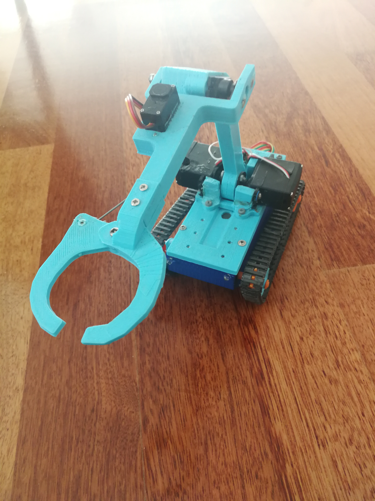

The Super Remote Controlled Mobile Robot Arm
The developer: Ege Özgül

Why I built this
I was imagining how it would be possible to rearrange the wires inside a suspended ceiling without tiles. So this designed came to my mind and I thought this would be super fun toy to play with. So instead of sticking with my initial purpose, I designed it to be a remote controlled desktop toy that I can use my phone to move small things around such as pencils and keys. You can also say that it's useless, but I used it a lot while trying to get rid of homework and exam stress. I really works!
The Robot is rigged with 4 servo motors for the arm. all of the blue parts were desinged in 3DsMax and were 3D printed. An Arduino Uno board was programmed to control the motors according to the data received from the bluetooth module inside. Additionally, he tracks and transmission system was bought seperately from ebay.
